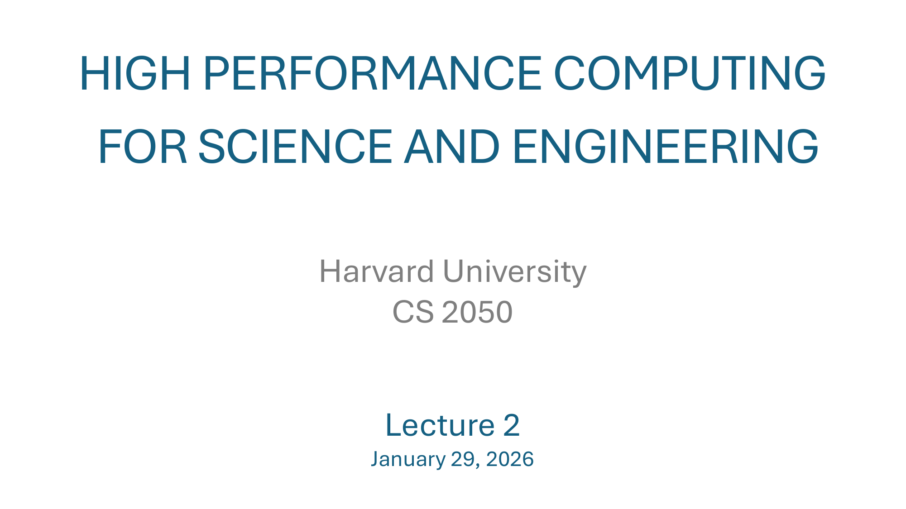
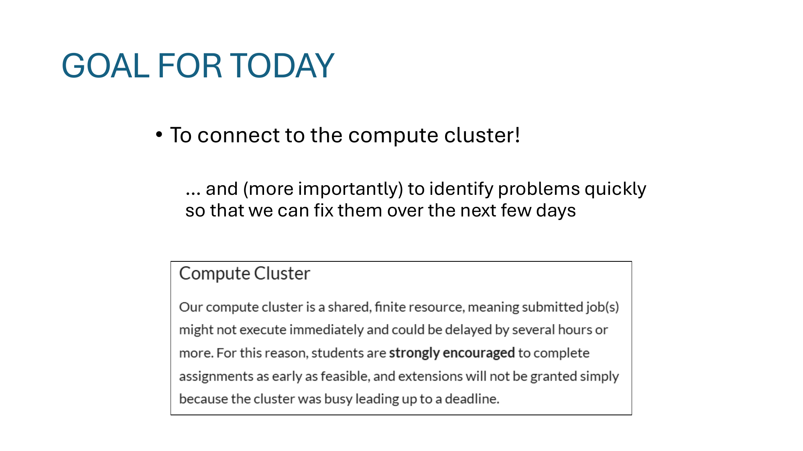
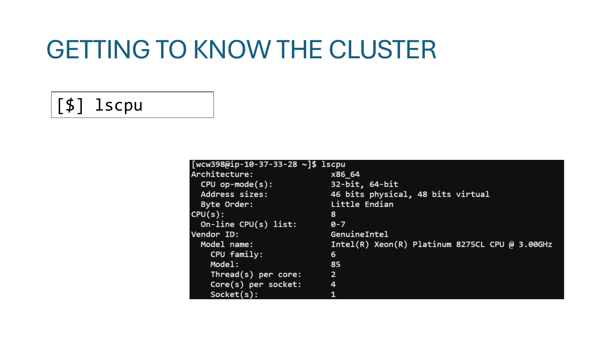
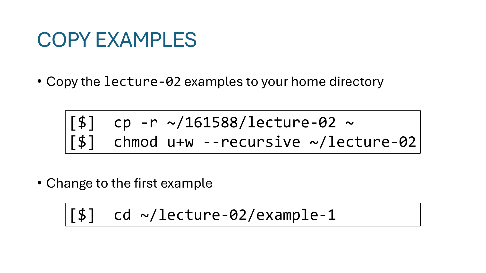
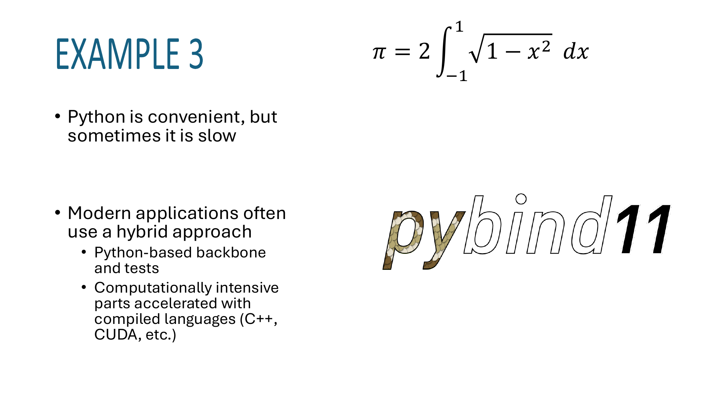
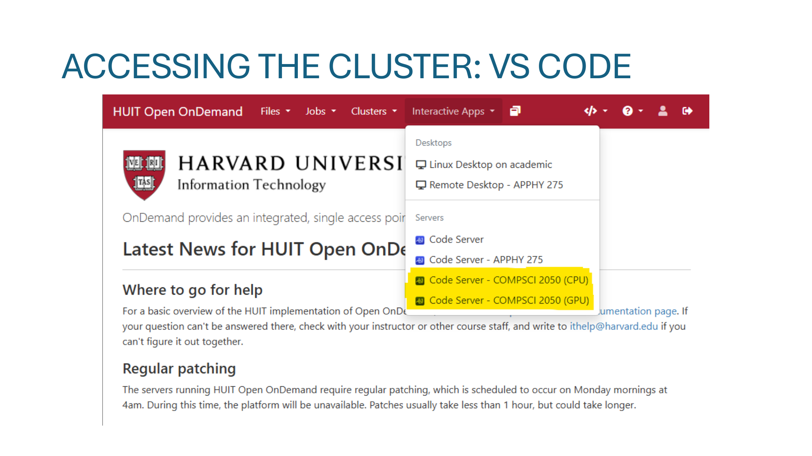

主题：Flynn's Taxonomy + 第一次接入计算集群（Open OnDemand / Shell / Slurm / CMake）
Lecture 2 由两条主线穿起来：(1) 概念上引入 Flynn's Taxonomy，给"并行"做最简单的分类；(2) 操作上让全班第一次连上集群——从浏览器 dashboard，到 SSH login node，到用 Slurm 把任务发到 compute node，再到用 CMake 编译第一个例子。中间穿插了一组"你熟不熟悉 Linux / C++ / Python / Slurm / Git ..."的 poll，目的是诊断班级技能水位，本身没有讲解内容。下面只对真正有信息量的 slide 展开讲解。

Flynn 在 1966 年提出的分类，到今天还是讲并行计算的标准入口。两个维度，每个维度两个状态，组合出 2 × 2 = 4 种机器：
| Single Data | Multiple Data | |
|---|---|---|
| Single Instruction | SISD — 经典单核 CPU（一条指令、一份数据） | SIMD — 一条指令同时作用在向量上（SSE/AVX、GPU warp） |
| Multiple Instruction | MISD — 几乎没有真实机器（容错冗余系统勉强算） | MIMD — 多核 CPU、超算集群（不同核跑不同指令、不同数据） |
关键观察：
课堂互动：图里那台机器是 Harvard Mark I（1944 年），人物是 Grace Hopper——她是首批三位程序员之一，负责给 Mark I 打孔带、写了 561 页的用户手册，并且"debugging"（调试）这个词就是从她记录"飞蛾卡进继电器"开始流行的。课程把这段放在开头是为了给课程一个本校的历史锚点。

今天唯一的硬目标：连上 compute cluster。隐含的真正目标是把环境问题暴露出来——比 SSH key 没配好、VPN 没装、VS Code 不能 remote 连，都要在课堂上当场被发现，然后在接下来几天里修掉。
这四张是 "如何把命令打到集群上" 的演示流程：
~/，最直观的入口。This login node is for lightweight tasks only.
For intensive work, use Slurm commands like sbatch or srun.Login node ≠ compute node。Login node 是所有用户共享的"前门"，只用来登录、编辑、提交任务。真正的计算工作不许在 login node 上跑，否则会拖慢所有人。这是后面整节 Slurm 内容的动机。
Slide 28 演示了第一条命令：
[wcw398@ip-10-37-33-44 ~]$ echo "Hello, CS-2050."
Hello, CS-2050.就只是验证"shell 接通了"，没有别的含义。

[$] lscpu一个工具：lscpu。它打印 CPU 架构（x86_64 / aarch64）、核数、每核线程数、缓存大小、是否支持 SSE/AVX/AVX-512 等。这一条命令在后面非常有用——只要写 SIMD 代码就要先 lscpu 看支持哪一档向量指令。

[$] cp -r ~/161588/lecture-02 ~
[$] chmod u+w --recursive ~/lecture-02
[$] cd ~/lecture-02/example-1逐行解释：
cp -r ~/161588/lecture-02 ~ —— 把课程账号 161588 提供的目录递归拷到自己 home。-r 是 recursive。chmod u+w --recursive ~/lecture-02 —— 给"自己（user）"加"写（w）"权限，整个子树都加。课程目录默认是只读的，自己改东西前要先开写权限。cd ~/lecture-02/example-1 —— 进入第一个例子目录，准备做编译实验。五张 slide 把 Slurm 最常用的五个命令逐个介绍。把它们当成集群上的"日常工作流"来记：
| 命令 | 用途 | 例子 |
|---|---|---|
sinfo | 看集群当前状态（哪些节点空、哪些被占用） | sinfo |
sbatch | 把一个 shell 脚本作为批处理任务丢进队列 | sbatch sbatch-me.sh |
squeue | 看队列里有什么任务在跑（加 -u 用户名 只看自己） | squeue -u wcw398 |
scancel | 取消某个 job（用 JOBID） | scancel 33524 |
srun | 互动模式：直接在 compute node 上开一个 shell | srun --nodes=1 --ntasks=4 --time=02:00:00 --pty bash |
对 srun 这条命令展开讲一下参数：
--nodes=1 — 申请 1 台机器（physical node）。--ntasks=4 — 在这台机器上跑 4 个并行任务（后面 MPI 会用到）。--time=02:00:00 — 最多用 2 小时（到点会被强制释放）。--pty bash — 给我一个交互式 bash 会话，而不是直接跑某条命令。记忆口诀：sinfo 看状态、sbatch 投脚本、squeue 看队列、scancel 杀任务、srun 抢交互。Slurm 在这门课里贯穿全程，五件套必须熟。
Example 2 用最经典的"面积积分求 π"作为编译练习：
π = 2 · ∫−11 √(1 − x²) dx
（半径为 1 的半圆面积是 π/2，整圆是 π。）数值上把 [−1, 1] 分成 N 段，每段算梯形/中点高度，累加即可。
简单情况：直接 g++
[$] g++ code.cpp对单文件、无外部依赖的小程序来说够用。
现代项目：CMake 两步走
# 步骤 1：Configure（生成构建系统）
[$] cmake -B where-to-build .
# 步骤 2：Build（实际编译）
[$] cmake --build where-to-build逐参数解释：
cmake —— 调用 CMake 工具本身。-B where-to-build —— 把构建产物（Makefile / 中间文件 / 可执行文件）放到 where-to-build 目录。out-of-source build：源码和构建产物分离，clean 起来就是把这个目录 rm -rf。. —— 这就是 slide 上问的"这个点是什么意思"：当前目录，告诉 CMake "去这里找 CMakeLists.txt"。cmake --build where-to-build —— 让 CMake 调用底层的 make / ninja 真正执行编译。g++ 就够了；但现代 C++ 项目往往要链接几十个第三方库，在 Linux/Mac/Windows 上的找包方式都不一样。CMake 提供跨平台、声明式的描述方式（写一份 CMakeLists.txt 就够），后面例子里会反复出现。

同样是积分求 π，但把例子搬到 Python 里。讲点很简单：
pybind11 / ctypes 等桥接。课程后面 GPU 那一节会重新回到这个 hybrid 模式。

第三种连法（除了 Open OnDemand 网页和 SSH 终端）：VS Code Remote-SSH。装上 VS Code 的 "Remote - SSH" 扩展，把集群作为远程主机，本地编辑、远程运行。这是大多数同学在后续作业里实际使用的开发方式，因为 IDE 体验远好于 vim 在终端里调代码。
对应的 SSH config 在 Lecture 4 末尾会展开（~/.ssh/config 的 Host / Hostname / IdentityFile）。
srun 和 sbatch 的差别？ sbatch 提交脚本，离线、批处理；srun 当场拿一个交互 shell（或当场跑一行命令），需要现场等资源。.？ 告诉 CMake 去当前目录找 CMakeLists.txt。第一个参数 -B 后面跟的是构建目录（产物去哪），不是源码目录。chmod u+w --recursive？ 课程账号给的目录默认只读；拷过来后要给自己加写权限才能改东西。srun 抢 compute node → cmake -B build . + cmake --build build → 跑可执行文件。后续每节课都假定这套流程已经熟练。